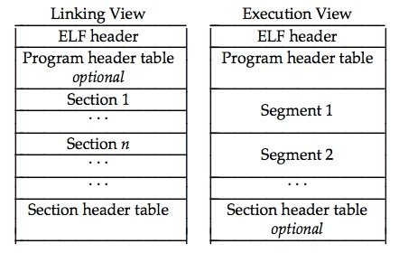
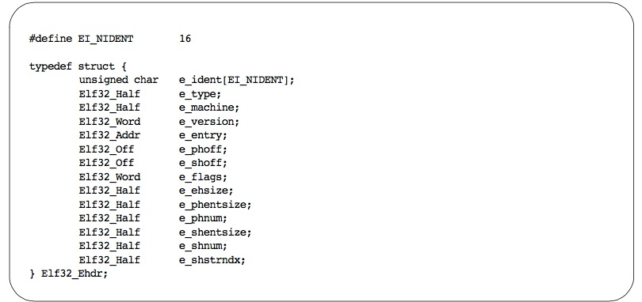
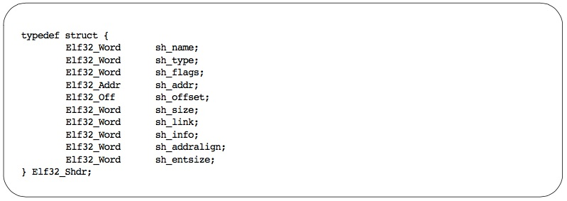
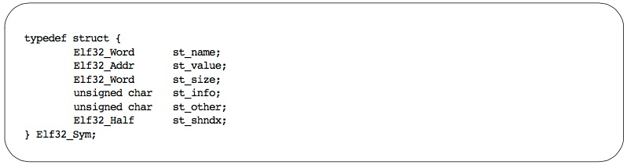
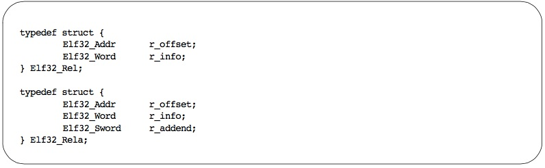
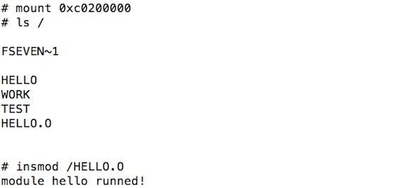

LKM介绍及其在嵌入式系统中的应用
Table of Contents
1 LKM介绍
维基百科中对LKM的介绍如下：
可加载核心模块 （英语：Loadable kernel module，缩写为 LKM）,又译为加载式核心模块、可装载模块、可加载内核模块，或直接称为内核模块，是一种目标文件（object file），在其中包含了能在操作系统内核空间运行的代码。它们运行在核心基底（base kernel），通常是用来支持新的硬件，新的文件系统，或是新增的系统调用（system calls）。当不需要时，它们也能从存储器中被卸载，清出可用的存储器空间。
视窗系统及类UNIX系统都支持这个功能，但在不同的操作系统中，它有不同的名称，如FreeBSD 称为核心加载模块（kernel loadable module，缩写为 kld），Mac OS X 称为核心扩充（kernel extension，缩写为 kext）。也有人称它为核心可加载模块（Kernel Loadable Modules，缩写为 KLM） ，或核心模块（Kernel Modules，KMOD）。
技术优点
没有可加载模块时，操作系统需要将所有可能需要的功能，一次全加入核心之中。其中许多功能，占据了存储器空间，但是从来没被使用过。这不但浪费存储器空间，而且每次在增加新功能时，用户需要重新编译整个内核，之后重启。可加载模块避免了以上的缺点，让操作系统可以在需要新功能时，动态加载，减少开发及使用上的困难。
由以上百科对LKM的介绍可知，LKM就是一种以二进制的方式动态扩展内核功能的技术, 在嵌入式系统中引入LKM机制，可以实现动态功能扩展、局部模块升级等功能。
2 Linux中的LKM
Linux属于单内核，为了弥补单内核扩展性与维护性差的缺点，Linux引入动态可加载内核模块，模块可以在系统运行期间加载到内核或从内核卸载。 下面是Linux中最简单的一个模块代码的例子hello _module.c：
#include <linux/init.h>
#include <linux/module.h>
#include <linux/kernel.h>
MODULE_LICENSE("GPL");
MODULE_AUTHOR("Yannik Li");
static int hello_init(void)
{
printk(KERN_ALERT "Hello Module.\n");
return 0;
}
static void hello_exit(void)
{
printk(KERN_ALERT "Goodbye Module!\n");
}
module_init(hello_init);
module_exit(hello_exit);
}
编译后便可通过insmod hello _module.ko装载到Linux内核中，装载后hello _init函数会首先被调用，在console中会输出“Hello Module"消息。 在Linux中可通过动态加载模块来加载新的驱动、文件系统，可在不用重新编译内核的情况下动态的扩展内核功能。
3 LKM的实现原理及在嵌入式RTOS中的实现
LKM的实现原理可以用一句话概括：*LKM就是通过动态链接来实现的* 。
在介绍如何通过动态链接方式来实现模块的动态加载前，首先要介绍一下ELF格式文件格式。
3.1 ELF文件格式
Executable and Linking Format(ELF)文件是Linux系统下的一种常用目标文件(object file)格式，有三种主要类型:
- 适于连接的可重定位文件(relocatable file)
- 可与其它目标文件一起创建可执行文件和共享目标文件。
- 适于执行的可执行文件(executable file)
- 用于提供程序的进程映像，加载的内存执行。
- 共享目标文件(shared object file)
- 连接器可将它与其它可重定位文件和共享目标文件连接成其它的目标文件，动态连接器又可将它与可执行文件和其它共享目标文件结合起来创建一个进程映像。
整个elf文件的组成可以使用下图来描述:
ELF文件内容有两个平行的视角:一个是程序连接角度，另一个是程序运行角度，如图所示:

3.2 ELF Header
ELF header结构如下图所示：

通过readelf读取hello.o中的头：
⚡ ../tools/arm-elf-toolchain-macosx/bin/arm-elf-readelf -h hello.o ELF Header: Magic: 7f 45 4c 46 01 01 01 61 00 00 00 00 00 00 00 00 Class: ELF32 Data: 2's complement, little endian Version: 1 (current) OS/ABI: ARM ABI Version: 0 Type: REL (Relocatable file) Machine: ARM Version: 0x1 Entry point address: 0x0 Start of program headers: 0 (bytes into file) Start of section headers: 336 (bytes into file) Flags: 0x200, GNU EABI, software FP Size of this header: 52 (bytes) Size of program headers: 0 (bytes) Number of program headers: 0 Size of section headers: 40 (bytes) Number of section headers: 11 Section header string table index: 8
3.3 ELF Section
ELF Section Header结构如下：

hello.o文件中的section如下：
⚡ ../tools/arm-elf-toolchain-macosx/bin/arm-elf-readelf -S hello.o There are 11 section headers, starting at offset 0x150: Section Headers: [Nr] Name Type Addr Off Size ES Flg Lk Inf Al [ 0] NULL 00000000 000000 000000 00 0 0 0 [ 1] .text PROGBITS 00000000 000034 000024 00 AX 0 0 4 [ 2] .rel.text REL 00000000 0003d4 000020 08 9 1 4 [ 3] .data PROGBITS 00000000 000058 000050 00 WA 0 0 4 [ 4] .rel.data REL 00000000 0003f4 000020 08 9 3 4 [ 5] .bss NOBITS 00000000 0000a8 000000 00 WA 0 0 1 [ 6] .rodata.str1.4 PROGBITS 00000000 0000a8 000048 01 AMS 0 0 4 [ 7] .comment PROGBITS 00000000 0000f0 000012 00 0 0 1 [ 8] .shstrtab STRTAB 00000000 000102 00004c 00 0 0 1 [ 9] .symtab SYMTAB 00000000 000308 0000a0 10 10 6 4 [10] .strtab STRTAB 00000000 0003a8 00002a 00 0 0 1 Key to Flags: W (write), A (alloc), X (execute), M (merge), S (strings) I (info), L (link order), G (group), x (unknown) O (extra OS processing required) o (OS specific), p (processor specific)
3.4 ELF Symbol Table
Symbol Table Entry的结构如下：

hello.o目标文件中的symbol table如下：
⚡ ../tools/arm-elf-toolchain-macosx/bin/arm-elf-readelf -s hello.o
Symbol table '.symtab' contains 10 entries:
Num: Value Size Type Bind Vis Ndx Name
0: 00000000 0 NOTYPE LOCAL DEFAULT UND
1: 00000000 0 SECTION LOCAL DEFAULT 6
2: 00000000 0 SECTION LOCAL DEFAULT 1
3: 00000000 0 SECTION LOCAL DEFAULT 3
4: 00000000 0 SECTION LOCAL DEFAULT 5
5: 00000000 0 SECTION LOCAL DEFAULT 7
6: 00000000 12 FUNC GLOBAL DEFAULT 1 exit_module
7: 00000000 0 NOTYPE GLOBAL DEFAULT UND printk
8: 0000000c 24 FUNC GLOBAL DEFAULT 1 init_module
9: 00000000 64 OBJECT GLOBAL DEFAULT 3 mod_entry
从以上symbol table中可以看出，在hello.o中printk()函数地址需要在链接时重定位。
3.5 Relocation
动态链接的过程就是对ELF文件中.text, .rodata, .data, .bss 等segment中的符号进行重定位, 更具体的过程就是查找哪些符号需要重定位，然后根据内核中符号表中的符号地址按照该符号的重定位类型码对符号进行重定位。
Relocation Entries的结构如下所示：

hello.o中的relocation entries：
⚡ ../tools/arm-elf-toolchain-macosx/bin/arm-elf-readelf -r hello.o Relocation section '.rel.text' at offset 0x3d4 contains 4 entries: Offset Info Type Sym.Value Sym. Name 00000004 00000701 R_ARM_PC24 00000000 printk 00000008 00000102 R_ARM_ABS32 00000000 .rodata.str1.4 00000014 00000701 R_ARM_PC24 00000000 printk 00000020 00000102 R_ARM_ABS32 00000000 .rodata.str1.4 Relocation section '.rel.data' at offset 0x3f4 contains 4 entries: Offset Info Type Sym.Value Sym. Name 00000040 00000102 R_ARM_ABS32 00000000 .rodata.str1.4 00000044 00000802 R_ARM_ABS32 0000000c init_module 00000048 00000102 R_ARM_ABS32 00000000 .rodata.str1.4 0000004c 00000602 R_ARM_ABS32 00000000 exit_module
relocation section告诉我们如何对符号进行重定位。
4 LKM实例
上面提到的hello.o是对下面代码编译后得到的obj文件：
#include <kernel/types.h>
#include <kernel/printk.h>
#include <module/module.h>
int init_module (void)
{
printk("module hello runned!\n");
return 0;
}
void exit_module(void)
{
printk("module hello exited!\n");
}
struct module_entry mod_entry = {
.name = "hello",
.num_syms = 2,
.syms = {{"init_module", &init_module},
{"exit_moduel", &exit_module}}
};
下面是对hello.o中.text段的反汇编：
⚡ ../tools/arm-elf-toolchain-macosx/bin/arm-elf-objdump -d hello.o hello.o: file format elf32-littlearm Disassembly of section .text: 00000000 <exit_module>: 0:e59f0000 ldrr0, [pc, #0]; 8 <exit_module+0x8> 4:eafffffe b0 <printk> 8:00000000 andeqr0, r0, r0 0000000c <init_module>: c:e52de004 strlr, [sp, #-4]! 10:e59f0008 ldrr0, [pc, #8]; 20 <init_module+0x14> 14:ebfffffe bl0 <printk> 18:e3a00000 movr0, #0; 0x0 1c:e49df004 ldrpc, [sp], #4 20:00000018 andeqr0, r0, r8, lsl r0
下面以一个例子来说明一下符号重定位的过程：
从上面relocation entries中可以得到，printk的重定位类型为R _ARM _PC24，对于R _ARM _PC24类型的重定位算法是：
((S + A) | T) – P
S: the address of the symbol
A: the addend for the relocation
T: is 1 if the target symbol S has type STT _FUNC and the symbol addresses a Thumb instruction; it is 0 otherwise.
P: the address of the place being relocated(derived from r _offset)
假设printk的地址是0xc000b120, 那么S=0xc000b120, 从反汇编代码可以得到在init _module()中A=0xebfffffe, P=0x4, 在exit _module()中A=0xeafffffe, P=0x14, T为0.
所以在init _module中调用printk处重定位的算法：
(((((0xebfffffe & 0x00ffffff) 2) & 0x00ffffff) | (0xebfffffe & 0xff000000)
经过以上符号重定位后，就可以正常的调用到printk了，即可成功动态加载hello.o模块。
实际运行结果如下图所示：
